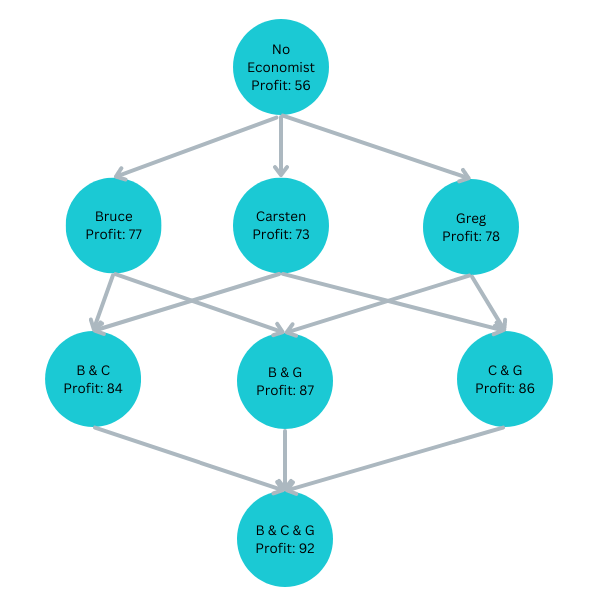
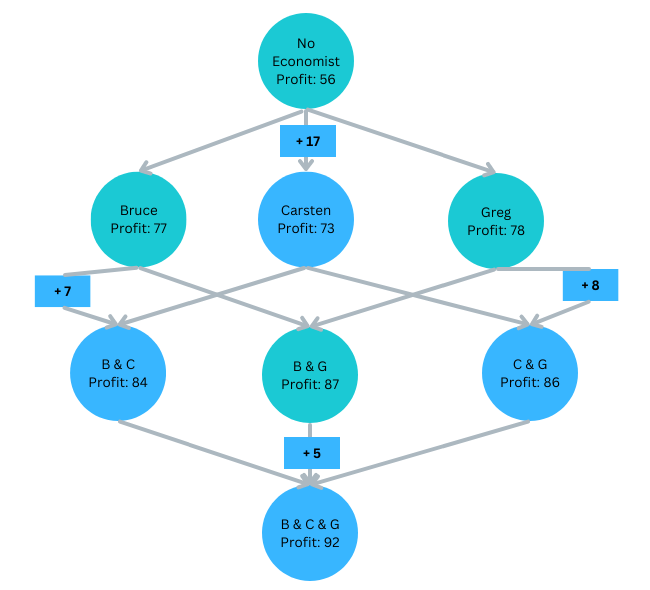
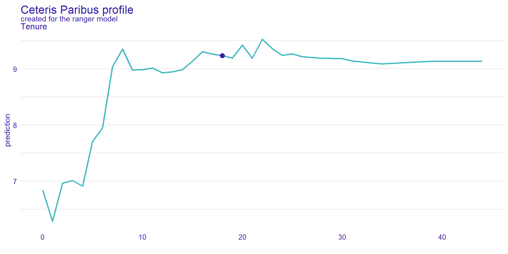

Interpretation of Machine Learning Results
From Blackbox to Interpretation

Types of Interpretation
Model specific
- Global
- Local
Model agnostic
- Global
- Local
Loading the Data and Libraries
library(tidymodels);library(rio);library(vip);library(DALEXtra); library(kableExtra)
DataVaxFull=import("https://ai.lange-analytics.com/data/DataVax.rds") %>%
mutate(RowNum=row.names(.))
DataVax= DataVaxFull%>%
select(PercVacFull, PercRep,
PercAsian, PercBlack,PercHisp,
PercYoung25, PercOld65,
PercFoodSt, Population) %>%
mutate(Population=frequency_weights(Population))
set.seed(2021)
Split85=DataVax %>% initial_split(prop = 0.85,
strata = PercVacFull,
breaks = 3)
DataTrain=training(Split85)
DataTest=testing(Split85)Global/Model Specific: Interpreting Coefficients and t-Values
Linear Regresiion
Code
ModelDesignLinRegr= linear_reg() %>%
set_engine("lm") %>%
set_mode("regression")
RecipeVax=recipe(PercVacFull~., data=DataTrain)
set.seed(2021)
WfModelVax=workflow() %>%
add_model(ModelDesignLinRegr)%>%
add_recipe(RecipeVax) %>%
add_case_weights(Population) %>%
fit(DataTrain)
kbl(tidy(WfModelVax) %>% arrange(desc(abs(statistic))))| term | estimate | std.error | statistic | p.value |
|---|---|---|---|---|
| (Intercept) | 0.9433753 | 0.0240164 | 39.2804433 | 0.0000000 |
| PercRep | -0.5515592 | 0.0164025 | -33.6264704 | 0.0000000 |
| PercBlack | -0.3771981 | 0.0207927 | -18.1408963 | 0.0000000 |
| PercYoung25 | -0.5999597 | 0.1060435 | -5.6576772 | 0.0000000 |
| PercHisp | 0.0645242 | 0.0136853 | 4.7148525 | 0.0000026 |
| PercFoodSt | -0.1887113 | 0.0503212 | -3.7501339 | 0.0001813 |
| PercOld65 | 0.1945055 | 0.0608728 | 3.1952800 | 0.0014165 |
| PercAsian | 0.0407740 | 0.0435763 | 0.9356931 | 0.3495327 |
Global/Model Specific: Variable Importance — Permutations
Random Forest
- Use Out-of-Bag data from each tree.
- Predict with all variables and record \(MSE_{all}\).
- Scramble values of first variable and record \(MSE_1\).
- The (standardized) difference between the \(MSE_{all}\) and the \(MSE_1\) of the scrambled version is the variable importance for the first variable.
- Repeat Steps 3 – 4 for the second, third variables and so on.
- Plot Variable Importance.
Variable Importance Plot — Permutations
Code
NumberOfCores=parallel::detectCores()
ModelDesignRandFor=rand_forest() %>%
set_engine("ranger", num.threads = NumberOfCores, importance="permutation") %>%
set_mode("regression")
set.seed(2021)
WfModelVax=workflow() %>%
add_model(ModelDesignRandFor)%>%
add_recipe(RecipeVax) %>%
add_case_weights(Population) %>%
fit(DataTrain)
vip(extract_fit_parsnip(WfModelVax))Global/Model Specific: Variable Importance – Impurity:
Random Forest
Use Out-of-Bag data from each tree.
Calculate the decrease of Variance Impurity for regression (Gini for classification) for each split in each tree where the first variable is involved.
Calculate the (weighted) average of all decreases for the first variable considering alls trees of the Random Forest.
Repeat steps 2 – 3 for the second, third variables and so on.
Plot Variable Importance.
Variable Importance Plot — Impurity:
Code
ModelDesignRandFor=rand_forest(trees=170, min_n=5, mtry=2) %>%
set_engine("ranger", num.threads = NumberOfCores, importance="impurity") %>%
set_mode("regression")
RecipeVax=recipe(PercVacFull~., data=DataTrain)
set.seed(2021)
WfModelVax=workflow() %>%
add_model(ModelDesignRandFor)%>%
add_recipe(RecipeVax) %>%
add_case_weights(Population) %>%
fit(DataTrain)
vip(extract_fit_parsnip(WfModelVax))Shapley Values from a Game Theory Approach
Bruce, Carsten, and Greg are Players contributing to the profit
Shapley Values from a Game Theory Approach
Estimating Carsten’s Contribution

We do not know at which level Carsten joins:
Carsten joins last: \(\Delta P^{rofit}_{BGC}=5\)
Carsten joins second:
\(\Delta P^{rofit}_{BC}=7\) or \(\Delta ^{rofit}_{GC}=8\)Carsten joins first: \(\Delta P^{rofit}_{C}=17\)
Carsten’s average contribution (Shapley value):
\(S^{hap}_C=\frac{1}{3}17+\frac{1}{6}7+\frac{1}{6}8+\frac{1}{3}5=9.83\)
Shapley Values from a Game Theory Approach
Estimating Bruces’s Contribution
Calculate Bruce’ contribution as an exercise:
- Spoiler Alert (below is the result):
- Bruces’s average contribution (Shapley value):
\(S^{hap}_B=12.33\)
Shapley Values from a Game Theory Approach
Estimating Greg’s Contribution
Calculate Greg’ contribution as an exercise:
- Spoiler Alert (below is the result):
- Greg’s average contribution (Shapley value):
\(S^{hap}_G=13.83\)
Shapley Values from a Game Theory Approach
Starting Profit — SHAP values — Final Profit
Initial Profit: \(Profit_0=56\)
Bruce’s SHAP: \(S^{hap}_B=12.33\)
Carsten’s SHAP: \(S^{hap}_B=9.83\)
Greg’s SHAP: \(S^{hap}_G=13.83\)
Profit with 3: \(Profit_3=92\)
Shapley Values from a Game Theory Approach
Coalitions and Permutations
Number of coalitions: \(N_{coalition }= 2^k=2^3=8\)
Number of joining scenarios: \(k!=3!=1\cdot 2\cdot 3=6\)
\(BCG\),\(BGC\),
\(CBG\), \(CGB\),
\(GBC\), \(GCB\)If all 6 scenarios are calculated, one can can calculate SHAPley values for all contributors (variables).
If less than 6 scenarios are calculated, one can can estimate SHAPley values for all contributors (variables).
SHAPley vs SHAP
SHAPley Values estimate contribution of players
SHAP is a computer implementation to estimate SHAPley values for predictors.
- The predictors become the players.
- The contributions become the SHAP values.
- For convinience we will use the terms SHAPley Values and SHAP Values interchangeable.
- We will use the term SHAP Values to measure the contribution of specific variables-value combinations.
- The average prediction (average outcome training data) plus all SHAP values equals the final prediction for the observation..
Example: The fact that the Republican vote was 62% in the analyzed county, lowered the predicted vaccination rate by 3%. Note, we use variable (Rep and value \(62%\)). The related SHAP value would be \(-0.03\) »
Local/Model Agnostic: Shap Values for Orange County
Code
if (!DraftMode){
library(DALEXtra)
DataTrainPredictorVar=DataTrain %>%
select(-PercVacFull,-Population)
ExplainerRandFor=explain_tidymodels(WfModelVax,
data=DataTrainPredictorVar,y=DataTrain$PercVacFull,
type="regression", verbose = FALSE,
label = "Vaccination Shap Values Random Forest")
set.seed(2021)
ShapValuesID141 = predict_parts(
explainer = ExplainerRandFor,
new_observation = DataVax[141,],
type = "shap",
b = 200)
}
# to plot use plot(ShapValuesID141)County: Orange, CA, Pred. Vac.: 0.72
Pred. Vac. Rate (all U.S. counties): 0.62Mean PercRep: 0.47
Mean PercAsian: 0.05
Mean PercFoodSt: 0.11
Mean PercBlack: 0.11
Mean PercOld65: 0.21
Mean PercOld65: 0.19
Mean PercYoung25: 0.09
Shap Values for Orange County
County: Orange, CA, Pred. Vac.: 0.72Pred. Vac. Rate (all U.S. counties; unweighted): 0.51[1] "PercYoung25 = 0.08558"[1] "PercHisp = 0.3405"[1] "PercBlack = 0.0162"[1] "PercFoodSt = 0.05945"[1] "PercAsian = 0.2029"[1] "PercRep = 0.4542"🤓 Below is a link to an R script that allows you to create your own SHAP values in R.
Create your own SHAP values in R: Click here and execute in RStudio
Shap Values for Two Counties (different Politic. Impact)
County: Orange, CA, Pred. Vac.: 0.72Pred. Vac. Rate (all U.S. counties): 0.62County: Merced, CA, Pred. Vac.: 0.52Pred. Vac. Rate (all U.S. counties): 0.62Shap Values for Two Counties (different Asian Impact)
County: Marin, CA, Pred. Vac.: 0.84Pred. Vac. Rate (all U.S. counties): 0.62County: San Joaquin, CA, Pred. Vac.: 0.58Pred. Vac. Rate (all U.S. counties): 0.62